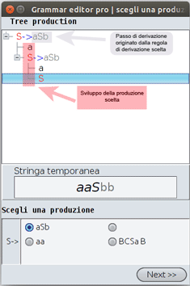

Di seguito è spiegata la modalità di lettura dell'albero di produzione.
I caratteri di colore rosso indicano i simboli non terminali.
I caratteri di colore nero indicano i simboli terminali.
I simboli terminali facenti parte della stringa temporanea saranno rappresentati nell' apposita stringa.
